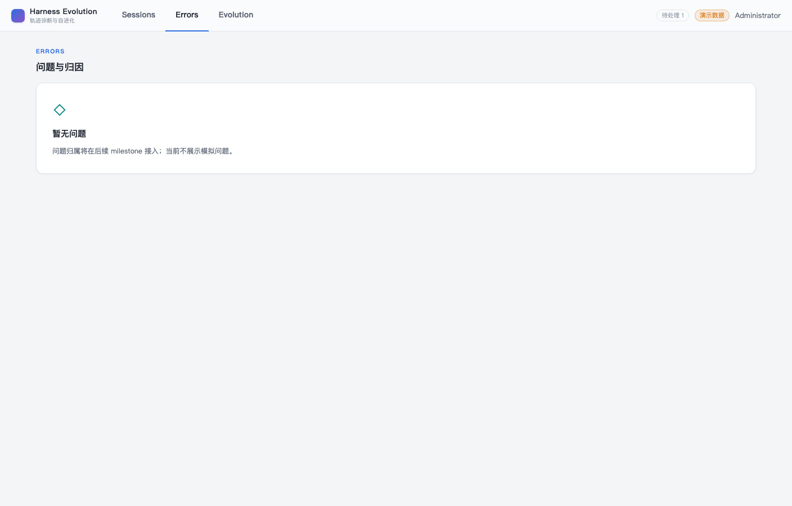
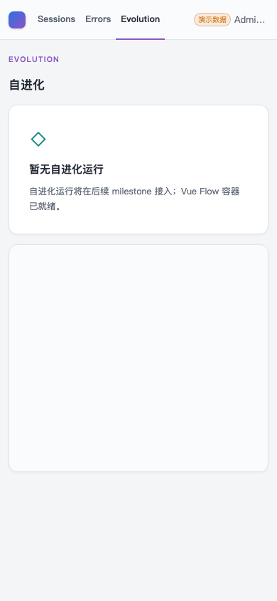

- Issue
- #40 · M2 upstream contract
- PR
- #100
- Commit
- 985928a
- Runtime
- FastAPI + SQLite + Vite + headless Chrome
- Upstream
- local mock only · no external network
Harness Evolution · PR #100
M2-08 上游轨迹契约与 Pull 冒烟报告
在隔离 FastAPI、SQLite、Vite、本地 mock upstream 与真实 headless Chrome/CDP 上验证 admin pull、分页、重试、逐会话隔离、版本拒绝、payload 幂等和亮色原型壳。核心链路通过，但发现 HE_UPSTREAM_API_MAJOR=1 环境变量导致服务启动失败。macOS 处于锁屏状态，原生 Computer Use 截图受阻；浏览器证据来自真实 Chrome/CDP，未用 mock UI 替代。
15冒烟场景
13通过
1失败
1基础设施阻塞
0意外控制台日志
Environment and Artifact
2026-10-26 · macOS · Chrome CDP · loopback onlyScenario Matrix
1 fail · 13 pass · 1 info| # | 场景 | 结果 | 观测 | 证据 |
|---|---|---|---|---|
| 01 | 显式 upstream major 环境变量启动 | FAIL | HE_UPSTREAM_API_MAJOR=1 被作为字符串输入严格 Literal[1]，应用启动在 Settings 校验阶段失败。移除显式变量后使用默认值可启动。 | Pydantic literal_error input_value='1' PR #100 issue comment |
| 02 | Session package 拉取与映射 | PASS | main 使用 root session id，child 保留 agentId；原始两行与一行 payload、hash、line_count 正确。 | SQLite trajectory_payloads / source_records tree snapshot 2 agents |
| 03 | Cursor window 分页 | PASS | 两页 cursor 拉取出 alpha/beta 两个 root，生成 4 个 http_api payload。 | sync_runs completed records_total=4 DB root sessions alpha/beta |
| 04 | 重复 pull 零副作用 | PASS | 第二次相同 pull 为 0 imported / 2 skipped，payload 和 source 稳定键与处理游标不变。 | sync_runs imported=0 skipped=2 6 个 runtime rows |
| 05 | 429/5xx 重试 | PASS | mock upstream 前两次返回 503，第三次成功；pull job completed。 | mock attempt count=3 retry root canonical rows |
| 06 | 404 逐会话隔离 | PASS | 404 session 只产生稳定 UPSTREAM_REQUEST_FAILED，批次继续 completed，其他 payload 不受影响。 | sync_runs errors missing-session no new payload for 404 root |
| 07 | 坏 gzip 隔离 | PASS | bad-gzip session 产生 UPSTREAM_INVALID_RESPONSE，后续正常 alpha 会话仍保持已有 canonical 数据。 | sync_runs completed + sanitized error payload count unchanged |
| 08 | 错 session package 拒绝 | PASS | 请求 wrongSession 返回 alpha package 被拒绝，错误为 UPSTREAM_INVALID_RESPONSE，零 payload 写入。 | sync_runs error wrong-session payload/source counts |
| 09 | 版本不兼容 fatal | PASS | 响应头 major=2 时 pull job 直接 failed，错误明确，版本校验前未写 payload。 | job status=failed UPSTREAM_VERSION_INCOMPATIBLE |
| 10 | 来源类型与未处理游标 | PASS | 所有 upstream payload/source 均为 http_api；处理后写入 hash/parser_version，而无 package 的失败 item 不伪造 script payload。 | 6 http_api payload/source rows parser_version=1 |
| 11 | Pull 权限与 selector | PASS | 未登录 401、member 403；空/双 selector、snake_case、字符串布尔均 422 统一 ErrorResponse。 | HTTP 401/403/422 matrix |
| 12 | 状态错误脱敏 | PASS | API status 只返回稳定 code/message，不回显 token、上游路径、gzip 原始内容或本地绝对路径。 | sanitized status JSON DB errors retained separately |
| 13 | 真实浏览器亮色原型壳 | PASS | body rgb(244,245,247)、topbar rgb(250,251,252) 高 56px、白卡片；登录无 TopNav，pending=1 与 admin 立即处理可见。 | 01-login.png 02-sessions.png 02b-admin-menu.png |
| 14 | 1408/390 与控制台 | PASS | 1408 与 390 均 scrollWidth=clientWidth；390 隐藏辅助状态但保留用户与 demo，无意外 console warning/error。 | 05-evolution-390.png browser-evidence.json |
| 15 | 原生 Computer Use 实机截图 | BLOCKED | macOS 锁屏导致 @oai/sky 无法取得应用状态；未绕过锁屏。改用同机真实 headless Chrome/CDP 完成浏览器交互与截图。 | Computer Use: Mac is locked Chrome CDP screenshots |
Issues and Observations
P1 HE_UPSTREAM_API_MAJOR=1 导致服务启动失败HE_UPSTREAM_API_MAJOR=1 导致服务启动失败
- 位置
- Settings.upstream_api_major / HE_UPSTREAM_API_MAJOR environment parsing
- 实际
- 环境值为字符串 "1"，严格 Literal[1] 校验拒绝，FastAPI 无法启动。
- 期望
- 标准环境变量值 1 成功解析并与 supported major 1 一致。
- 根因候选
- 缺少环境变量层的整数/枚举解析测试与 validator。
- 状态
- 未修复 · PR #100 issue comment 已提交
Evidence
6 screenshots





Automated Coverage Assessment
5 areas reviewed| 区域 | 覆盖 | 结论 | 建议 |
|---|---|---|---|
| Upstream contract | Pydantic + canonical JSON Schema + Ajv | 严格字段、身份、日期和版本约束由自动测试覆盖。 | 保留 mock-only CI 和 contract drift gate。 |
| HTTP client / retry / isolation | MockTransport + loopback mock server | 429/5xx、分页、坏 gzip、404、错 session 与版本 fatal 均已验证。 | M6 接入真实上游时复用相同 contract tests。 |
| Pull persistence | 真实 FastAPI + 临时 SQLite | http_api payload/source、幂等重复 pull、source runtime 游标与锁释放正确。 | CI 继续执行 MySQL marked contract。 |
| UI | 真实 Chrome 1408/390 + computed style | 亮色原型壳、pending 摘要和 admin-only 操作符合当前实现范围。 | Sessions 业务列表仍由后续页面 issue 交付。 |
| Native Computer Use | Blocked by locked macOS | 未冒充原生 CUA 证据；真实 Chrome/CDP 截图已保留。 | 设备解锁后重采原生 CUA 截图。 |
Conclusion
核心链路通过 · 1 个配置缺陷待修上游契约、pull、幂等、隔离、权限和原型 UI 主链路通过；显式 HE_UPSTREAM_API_MAJOR=1 启动失败是当前唯一产品阻断项。
- 先修复环境变量整数解析并增加启动回归。
- macOS 解锁后补做原生 Computer Use 截图；不得把 CDP 证据写成 CUA 实机通过。
- 真实上游仍未接入，本地 mock 边界符合 M2 设计。
证据源：隔离 FastAPI/SQLite/Vite、本地 mock upstream、真实 Chrome/CDP、脱敏 HTTP 与 SQLite 结果。生成 HTML 不应手改。